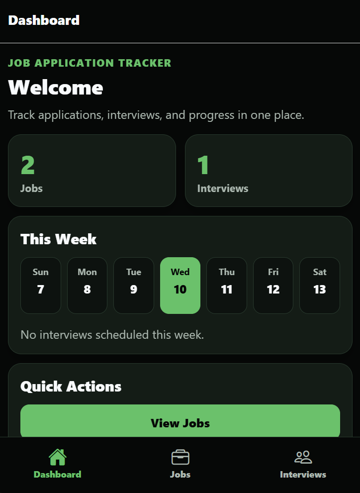

Featured Full-Stack Project
Job Application Tracker
Job Application Tracker is a full-stack platform built to help users organize job applications, manage interviews, and track hiring progress from one centralized system.
I built this project from scratch to strengthen my full-stack software engineering skills while creating a practical tool I could use during my own job search.
Technical Highlights
- Built a React Native and Expo frontend with cross-platform support for web and mobile.
- Designed a custom Express.js REST API with protected routes and centralized validation middleware.
- Used MySQL to model users, job applications, and interviews with relational data ownership.
- Implemented JWT authentication, bcrypt password hashing, and user-specific authorization.
- Managed server state, caching, and mutations with TanStack React Query.
- Created reusable form, UI, theme, and validation patterns across the frontend.
Key Features
- User registration and login with JWT-based authentication.
- Create, edit, delete, search, and filter job applications.
- Create, edit, and delete interviews associated with specific jobs.
- Weekly interview calendar dashboard for upcoming interviews.
- Client-side and server-side validation for cleaner data handling.
- Responsive UI styling designed for both phone and web layouts.